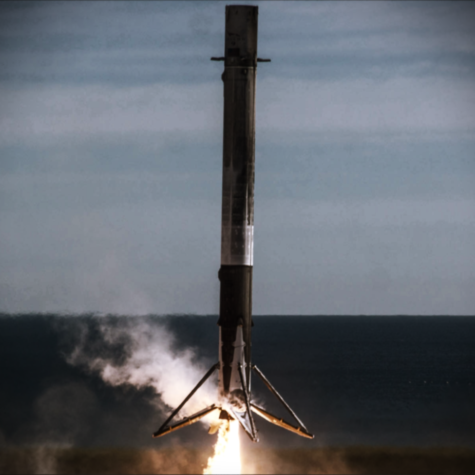

Self Landing Rocket System

Project Overview
The SLRS project aims to revolutionize autonomous rocket landing technology by leveraging advanced control algorithms, machine learning models, and sensor integration. By developing a system that can precisely control a rocket's descent and landing, we seek to improve the safety, reliability, and efficiency of space missions.
Github: https://github.com/ViratSrivastava/SLRS
Key Objectives
- Autonomous Control: Develop algorithms that allow the rocket to autonomously control its descent and landing in real-time.
- Precision Landing: Utilize sensor data and machine learning to accurately identify and target the landing site.
- Robust Integration: Ensure seamless integration of software and hardware components for reliable operation.
Tools & Technologies Used
- C++: For real-time control algorithms and flight dynamics
- Python: For data analysis, simulation, and visualization
- MATLAB: For simulation and modeling of rocket dynamics
- TensorFlow: For implementing machine learning models
- Gym: For reinforcement learning environments
- Blender: For 3D modeling and visualization
- Git: For version control and collaboration
Development Components
- C++ Modules:
- Real-time control systems
- Sensor data processing
- Flight dynamics calculations
- Python Implementation:
- Machine learning models
- Computer vision systems
- Data visualization tools
- MATLAB Components:
- System modeling
- Flight simulations
- Performance analysis
Current Status
Project is under active development. Core modules for flight control and landing systems are being implemented and tested in simulation environments.